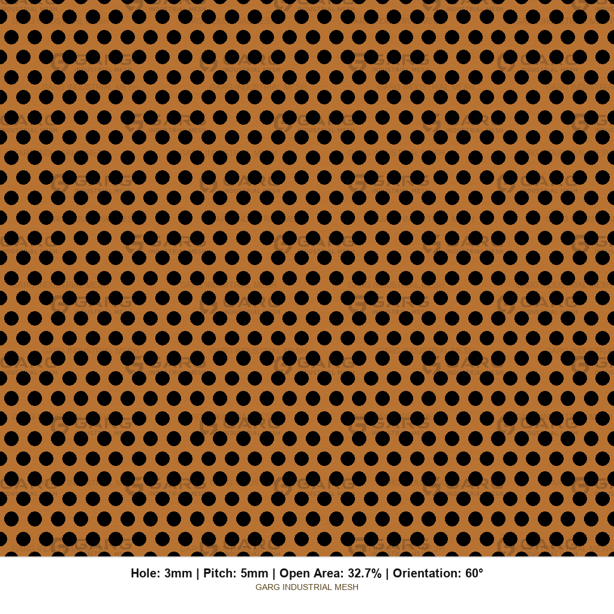
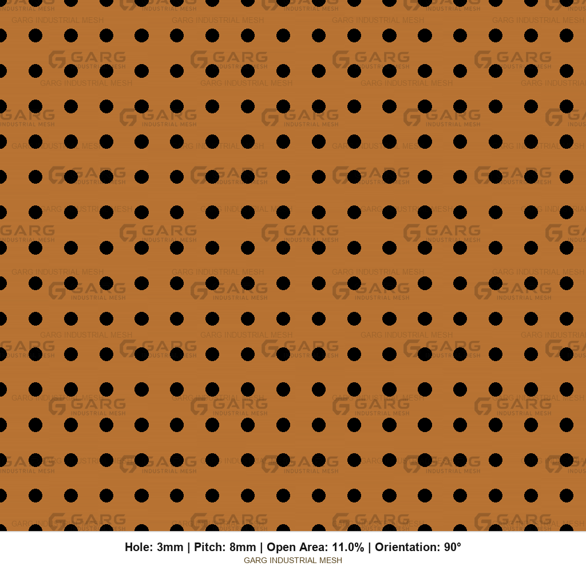
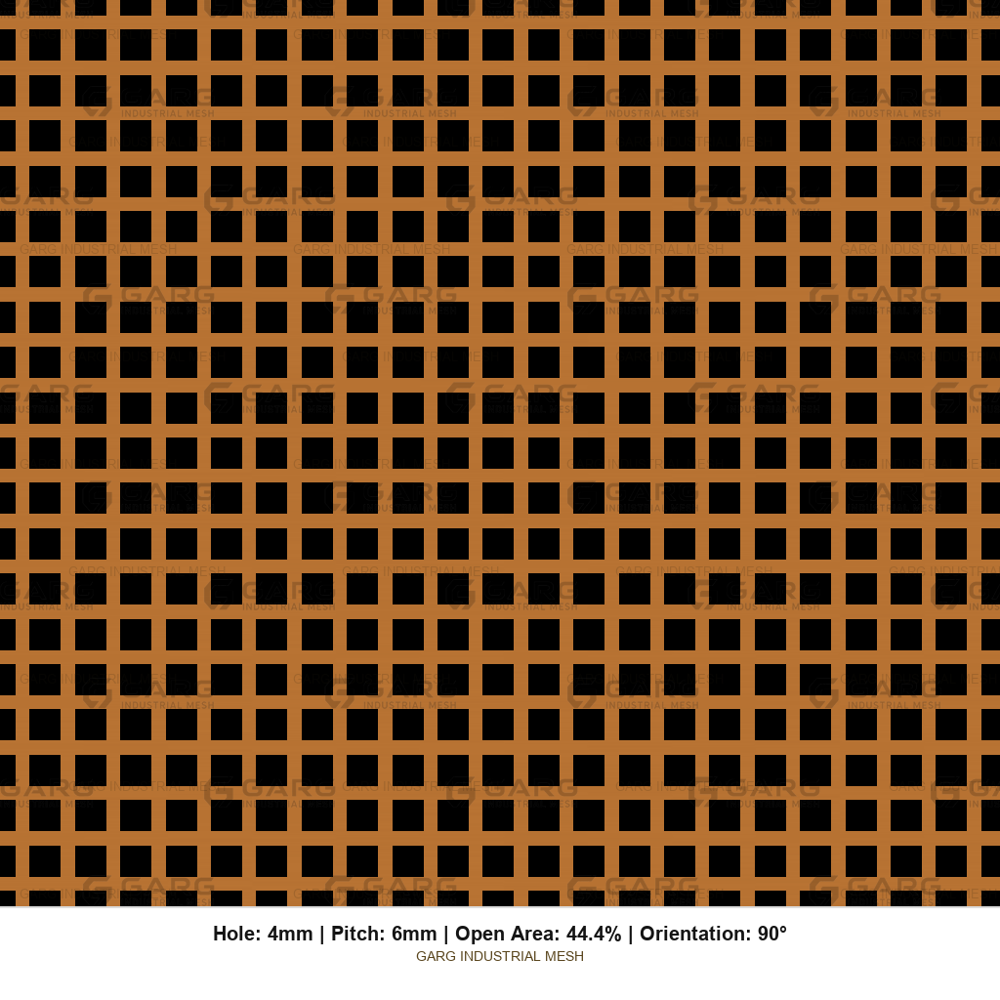

RFQ
Buy Brass Perforated Sheet from GARG India
Send a complete RFQ once. Incomplete RFQs become clarification chains and metal that fails install. Use the checklist, then copy a sample email and fill the blanks.
Complete RFQ checklist
- Alloy — UNS / ASTM (e.g. C26000, C27000, C28000, C23000) or commercial name + ask GARG for equivalent. See cartridge brass grades.
- Temper — Annealed / soft (O60), 1/4 hard, 1/2 hard, hard. See brass sheet temper.
- Standard — Typically ASTM B36 / B36M for brass sheet. See ASTM B36 brass sheet standards.
- Thickness — Millimetres (decimal). Confirm hole ≥ thickness.
- Sheet size — Finished width × length.
- Hole — Shape + size (Ø / side / AF or AP for hex).
- Pitch — Center-to-center. See hole size pitch open area brass.
- Orientation — Round 60°, Round 90°, Square 90°, Hex 60°, or custom.
- Open area (OA%) — Target % on perforated field, or calculate from pattern.
- Blank edge — 0–100 mm custom. Beyond 100 mm on request. See blank margin unperforated border brass.
- Finish — Mill / oiled / lacquered.
- Quantity — Sheets or pieces.
- Drawings — Attach for unequal margins, cutouts, orientation.
- Packing — Paper interleaved, crate, export packing.
- End use (one sentence) — Decorative screen, elevator panel, speaker grille, etc.
Don't order without…
Alloy, temper, thickness, sheet size, hole + pitch + orientation, blank edge, qty, and end use.
One-line RFQ template
Brass perforated sheet — ASTM B36 C26000, temper O60 (annealed), 1.0 mm × 1000 × 2000 mm, Round 60° Ø3.0 mm / pitch 5.0 mm, OA ~32% (perforated field), blank edge 20 mm all sides, mill finish, qty 50 sheets. Confirm hole ≥ thickness. Packing: paper interleaved, wooden crate. End use: decorative brass screen, visible both sides.
Sample email — decorative / cladding
Subject: RFQ — Brass perforated sheet (C26000, Round 60°)
To: GARG INDUSTRIAL MESH
Please quote:
Material: Brass perforated sheet, ASTM B36 C26000 (cartridge brass)
Temper: O60 (annealed) — slight curve on install
Thickness × size: 1.0 mm × 1000 × 2000 mm
Pattern: Round 60° staggered, Ø3.0 mm / pitch 5.0 mm
Open area: ~32% on perforated field (please confirm)
Blank edge: 20 mm all sides
Finish: Mill; lacquer optional — advise
Qty: 50 sheets
Packing: Wooden crate
End use: Architectural decorative brass screen, visible both sides
Please confirm hole ≥ thickness, lead time, and tooling notes.
Thank you,
[Name / Company / Phone]
Sample email — elevator panel
Subject: RFQ — Brass elevator cabin panel (drawing attached)
To: GARG INDUSTRIAL MESH
Quote per attached drawing:
Material: ASTM B36 C26000
Temper: H02 (1/2 hard) for flatness
Thickness × size: 1.0 mm × 800 × 1600 mm
Pattern: Round 60°, Ø5.0 / pitch 8.0
OA%: Calculate and confirm on perforated field
Blank edge: Top 40 / bottom 40 / left 25 / right 25 mm
Finish: Mill; protect for fingerprints — lacquer after install by others
Qty: 24 pcs
End use: Elevator cabin interior panel
Please flag hole/thickness or margin concerns before production.
[Name / Company]
Sample email — speaker grille
Subject: RFQ — Brass speaker grille perforated sheet
ASTM B36 C26000, temper O60, 0.8 mm × [blank size]
Round 60° Ø2.0 / pitch 3.5, blank edge 15 mm all sides
Qty 200 pcs
Burr side: away from show/cloth face
End use: Brass speaker grille face — geometry only, not acoustic rating claim
Packing: paper interleaved
[Name / Company]
What happens after you send it
GARG INDUSTRIAL MESH will confirm manufacturability, quote price and lead time, and ask only for what is still missing. Stock patterns move faster. Special tooling or beyond-100 mm blank edges need explicit confirmation.
Still choosing alloy or pattern? Start at the brass perforated sheet buying guide, then C26000 grades and hole size, pitch, and open area.
Reference patterns for your RFQ


